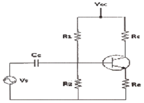
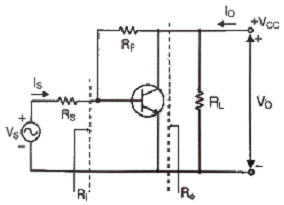
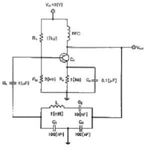
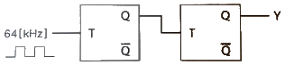
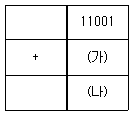
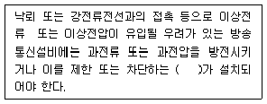
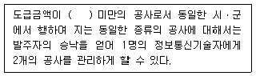

정보통신산업기사 (2019-03-09 기출문제)
1과목: 디지털전자회로
1. 전파 정류회로의 맥동률은 얼마인가?
- 약 0.482%
- 약 1.21%
- 약 11.1%
- 약 48.2%
(정답률: 66%)

2. 다음 중 직류 전원회로의 구성 순서로 옳은 것은?
- 정류회로 → 변압회로 → 평활회로 → 정전압회로
- 변압회로 → 정류회로 → 평활회로 → 정전압회로
- 변압회로 → 평활회로 → 정류회로 → 정전압회로
- 변압회로 → 정류회로 → 정전압회로 → 평활회로
(정답률: 73%)
3. 다음 중 정전압회로의 파라미터에 속하지 않는 것은?
- 전압안정계수(SV
- 온도안정계수(ST)
- 출력저항(RO)
- 최대제너전류(IZ)
(정답률: 70%)
4. 다음 중 2단 이상의 증폭기에서 잡음을 줄일 수 있는 가장 효과적인 방법은?
- 종단 증폭기의 이득은 첫단 증폭기에 비해 가능한 낮게 설계한다.
- 첫단 증폭기는 가능한 이득이 작은 증폭기로 구성한다.
- 첫단 증폭기를 트랜지스터(쌍극성 트랜지스터) 증폭기로 구성한다.
- 첫단 증폭기를 잡음지수(Noise Figure)가 낮은 증폭기로 구성한다.
(정답률: 73%)
5. 다음 회로에서 Re의 값과 관계가 없는 것은?

- Re가 크면 클수록 입력 임피던스는 커진다.
- Re가 크면 클수록 안정계수 S는 적어진다.
- Re가 크면 클수록 증폭된 컬렉터 전류는 적어진다.
- Re가 크면 클수록 전압 증폭도는 커진다.
(정답률: 58%)
6. 다음 중 궤한증폭기의 특성에 관한 설명으로 틀린 것은?

- 궤환으로 입력 임피던스 Ri는 감소한다.
- 궤환으로 출력 임피던스 Ro는 감소한다.
- 궤환으로 전류이득 Io/Is는 감소한다.
- RF가 작을수록 출력전압 VO는 커진다.
(정답률: 57%)
7. 전압궤환증폭기에서 무궤한 시 이득이 A, 궤환율이 β일 때 궤환 시 전압 이득은 Af=A/(1-βA)이다. βA=1인 경우 어떠한 회로로 동작한 것인가?
- 부궤환회로이다.
- 파형정형회로이다.
- 발진회로이다.
- 궤환회로도 아니고 발진회로도 아니다.
(정답률: 74%)
8. 수정 발진회로에서 수정 진동자의 전기적 직렬 공진 주파수를 fs, 병렬 공진 주파수를 fP라 할 때, 가장 안정된 발진을 하기 위한 조건은? (단, fa는 발진 주파수이다.)
- fP＜fa＜fS
- fa=fS
- fS＜fa＜fP
- fa=fP
(정답률: 78%)
9. 다음 중 클랩(Clapp)발진기의 설명으로 틀린 것은?
- 콜피츠 발진기를 변형한 것이다.
- 발진주파수가 안정하다.
- 발진주파수 범위가 작다.
- 발진출력이 크다.
(정답률: 59%)
10. 다음의 회로에서 발진기 명칭과 C3의 역할이 맞는 것은?

- 클랩 발진기, 발진 주파수 안정화
- 컬렉터 동조형 발진기, 발진 이득의 안정화
- 콜피츠 발진기, 위상 안정화
- 하틀리 발진기, 왜율 개선
(정답률: 63%)
11. 진폭변조 회로에서 피변조파 전력이 30[kW]이고 변조도가 100[%]라면 반송파 전력은 얼마인가?(오류 신고가 접수된 문제입니다. 반드시 정답과 해설을 확인하시기 바랍니다.)
- 10[kW]
- 20[kW]
- 30[kW]
- 40[kW]
(정답률: 44%)
12. 다음 중 DSB-LC(DSB-TC) 변조 후에 발생되는 (피)변조 신호를 구성하는 성분이 아닌 것은?
- 반송파
- USB
- LSB
- FSB
(정답률: 53%)
13. 다음 중 간접 FM 변조회로에서 변조용으로 사용되는 다이오드는?
- 가변용량 다이오드
- 터널 다이오드
- 제너 다이오드
- 쇼트키 다이오드
(정답률: 61%)
14. 진폭변조(AM)에서 반송파 주파수(fc)가 1,000[kHz]이고, 신호파 주파수(fs)가 2[kHz]일 때 필요한 주파수대역폭(BW)은?
- 1[kHz]
- 4[kHz]
- 1,000[kHz]
- 4,000[kHz]
(정답률: 66%)
15. 다음 중 멀티바이브레이터의 단안정회로와 쌍안전회로는 어떻게 결정되는가?
- 결합회로의 구성에 따라 결정된다.
- 출력전압의 부궤환율에 따라 결정된다.
- 입력전류의 크기에 따라 결정된다.
- 바이러스 전압 크기에 따라 결정된다.
(정답률: 70%)
16. 다음 중 클리핑 레벨의 위 레벨과 아래 레벨 사이의 간격을 좁게하여 입력파형의 특정 부분을 잘라내는 회로는?
- 클램핑 회로(Clamping Circuit)
- 슬라이서 회로(Slicer Circuit)
- 적분 회로(Integral Circuit)
- 클리핑 회로(Clipping Circuit)
(정답률: 70%)
17. 다음 중 이진수 101011을 십진수로 표시한 것은?
- 37
- 41
- 43
- 45
(정답률: 84%)
18. 다음 회로에서 Y는 어떤 파형이 출력되는가? (단, 입력은 64[kHz]구형파이다.)

- 32[kHz] 구형파
- 24[kHz] 구형파
- 16[kHz] 구형파
- 8[kHz] 구형파
(정답률: 76%)
19. 다음 중 동기식 카운터와 가장 관계가 없는 것은?
- 리플 카운터라고도 한다.
- 동일 클록으로 동작한다.
- 고속 카운팅에 적합하다.
- 회로 설계 시 주의를 요한다.
(정답률: 60%)
20. 다음 중 마스터-슬레이브 플립플롭으로 해결할 수 있는 현상으로 알맞은 것은?
- Toggle 현상
- Race 현상
- Storage 현상
- Hogging 현상
(정답률: 66%)
2과목: 정보통신기기
21. 컴퓨터 시스템의 처리결과를 데이터 또는 문자로 바꿔주는 장치는?
- 플로터
- OMR
- OCR
- 카드 리더
(정답률: 67%)
22. 데이터 통신시스템에서 범용 단말기로 사용되는 PC나 워크스테이션과 같은 데이터 통신 단말기의 기능으로 틀린 것은?
- 인간과의 인터페이스가 되는 입ㆍ출력되는 기능
- 통신회선을 거쳐서 컴퓨터와 통신하는 전송제어기능
- 타 기종의 컴퓨터 액세스를 위하여 프로토콜을 변환하는 기능
- 저장 장치를 갖추어 데이터를 축척하거나 간단한 처리를 하는 로컬 처리 기능
(정답률: 66%)
23. 다음 중 VDSL 서비스 방식에서 가입자 댁내 장비는?
- 다중화장비(DSLAM)
- 네트워크접속장치(NAS)
- EMS
- 모뎀(Modem)
(정답률: 85%)
24. 다음 중 DSU와 MODEM에 대한 설명으로 옳지 않은 것은?
- MODEM은 DTE와 아날로그 회선망을 접속한다.
- MODEM 간의 신호 전송형태는 디지털이다.
- DSU는 DTE와 디지털 회선망을 접속한다.
- DSU는 DTE로부터 단극성 펄스를 복극성 펄스로 변환한다.
(정답률: 70%)
25. 입력 장비가 3개인 동기식 TDM에서 각 프레임은 7개의 문자로 구성되어 있으며 프레임마다 동기를 위해서 2[bits]를 할당한다. 각 문자는 8[bits]이고, 각 입력단의 장비는 5,800[bps]로 보낸다고 할 때 다중화된 후의 프레임 속도는?
- 100[Frames/Second]
- 200[Frames/Second]
- 300[Frames/Second]
- 400[Frames/Second]
(정답률: 71%)
26. LAN 장비 중에 더미 허브의 설명으로 맞는 것은?
- 단순히 컴퓨터와 컴퓨터 간의 네트워크를 중계하는 역할
- 단순한 전송하는 기능을 넘어 수신지 주소로 스위칭하는 역할
- 허브와 허브 사이를 연결하여 용량을 확장하는 역할
- 네트워크 관리 시스템을 이용하여 신호의 조절과 변경 등 다양한 지능형 기능을 포함한 허브 역할
(정답률: 68%)
27. 다음 중 집중화기의 설명으로 거리가 먼 것은?
- 집중화기는 m개의 입력 회선을 n개의 출력 회선에 집중화 시키는 장비이다.
- 집중화기는 m개의 입력 회선이 n개의 출력 회선보다 작거나 같아야 한다.
- 집중화기의 입력 회선은 단말기와 집중화기를 연결하는 기능이다.
- 집중화기의 출력 회선은 집중화기와 다른 집중화기를 연결하거나 호스트 컴퓨터와 전처리와 연결된다.
(정답률: 69%)
28. 디지털 가입자 회선기술로서 망측과 가입자측에 각각 설치되어 가입자 선로상으로 효율적인 데이터 전송을 위한 것이 아닌 것은?
- HDSL
- ADSL
- VDSL
- DSSL
(정답률: 73%)
29. N 위상 변조에서 동기식 모뎀의 신호 속도가 M[Baud/sec]인 경우 비트 속도를 구하는 식은?
- M log2N
- N log2M
- M log10N
- N log10M
(정답률: 75%)
30. 다음 중 영상압축에 대한 설명으로 거리가 먼 것은?
- 저장장치의 영상 저장 효율 증가
- 데이터 양이 경감됨으로 하드웨어의 크기가 감소
- 전송시스템에서 대역폭을 절감하게 됨으로 대역폭이 고정된 시스템은 전송속도가 감소됨
- 데이터 양, 대역폭 및 속도가 감소됨으로 하드웨어 제품의 비용과 전송비용이 절감됨
(정답률: 66%)
31. 특수한 목적으로 간단한 카메라와 모니터링 화면 및 이를 총괄하여 처리하는 컴퓨터 시스템으로 구성된 통신기기는?
- CATV
- CCTV
- FAX
- HDTV
(정답률: 86%)
32. CATV방송에서 입력측 (C/N)=20이고, 출력측 (C/N)=10이라고 가정하면 잡음지수(Noise Factor)는?
- 0.5
- 1
- 2
- 3
(정답률: 79%)
33. 다음 중 디지털 TV 방송의 특성에 대한 설명으로 틀린 것은?
- 영상 및 음향신호의 압축이 용이하고 녹화 재생 시 화질이나 음질의 열화가 적다.
- 다양한 멀티미디어의 많은 정보를 서비스할 수 있다.
- 오류 정정 기술을 사용할 수 있고 저장 및 복제에 따른 손실이 적다.
- 상호간섭이 비교적 많고, 신호의 열화가 완만하다.
(정답률: 83%)
34. 다음 중 위성통신 방식의 종류를 구분하는 요소로서 적합하지 않은 것은?
- 위성 중계기의 기능
- 위성 중계기의 위치
- 위성 중계기의 수량
- 위성 중계기의 고도
(정답률: 82%)
35. 다음은 TRS(Trunked Radio System)에 관한 설명으로 옳지 않은 것은?
- 주로 하나의 기지국은 Cellular 보다 좁은 서비스 지역(Area)를 구성한다.
- 사용자가 사용하지 않는 시간을 이용하여 다수의 가입자군이 일정 주파수 채널을 공동으로 사용한다.
- 일제통화, 선별통화, 개별통화 기능이 있다.
- 통화누설이 없고, 잡음과 혼신이 적은 양호한 통화품질을 유지한다.
(정답률: 71%)
36. 최근 위성방송에서 일반적으로 사용하는 디지털 변조방식은?
- PSK
- OFDM
- QAM
- VSB
(정답률: 57%)
37. 다음 중 VOD(Video On Demand) 시스템의 Main Control부에 대한 설명으로 틀린 것은?
- 전체시스템 관리의 머리역할을 담당한다.
- 각 시스템과의 유기적 관계를 관리한다.
- 통합 사이트와 로컬 사이트의 콘텐츠 문제 역할을 담당한다.
- 시스템의 중앙 처리부를 담당한다.
(정답률: 74%)
38. VOD(Video On Demand) 시스템의 구성 중 Main Control부에서 인증된 클라이언트에게 실제 처리할 VOD 서버 및 QAM Port 관리 Session에 대한 물리적 관리를 진행하는 구간을 무엇이라 하는가?
- Pumming부
- 전송부
- 사용자부(Client)
- 데이터 변환부
(정답률: 61%)
39. 다음 멀티미디어 중 음성계 미디어로 가장 적절한 것은?
- DAT(Digital Audio Tape)
- HDTV
- 전자북(e-book)
- VoD
(정답률: 78%)
40. 샤논의 통신용량 공식에서 통신용량은 대역폭의 몇 배 비례하는가?
- 1배
- 1.5배
- 2배
- 3배
(정답률: 77%)
3과목: 정보전송개론
41. 공동 이용기(Sharing Unit)의 도입 시 고려할 요소로 가장 거리가 먼 것은?
- 네트워크 환경
- 자동 응답기
- 접속 가능한 모뎀
- 동시 접속 단말기 수
(정답률: 78%)
42. 각 펄스에 대한 직류성분을 제거시키고 등기유지와 전송대역폭을 줄이는 방법으로 바이폴라(Bipolar) 방식과 맨체스터(Manchester) 방식을 결합한 것은?
- 차등(Differential) 부호 방식
- 다이코드(Dicode) 방식
- CMI 방식
- HDB3 방식
(정답률: 69%)
43. 다음 중 QPSK에 대한 설명으로 틀린 것은?
- 두 개의 DPSK를 합성한 것이다.
- 피변조파의 크기는 항상 일정하다.
- 반송파간의 위상차는 90°이다.
- 1채널과 Q채널 두 개가 있다.
(정답률: 70%)
44. 다음 중 CWDM 전송 대역으로 사용할 수 없는 파장 대역은?
- 1.550[nm]
- 1.610[nm]
- 1.310[nm]
- 1.250[nm]
(정답률: 61%)
45. 동축케이블을 이용한 케이블 TV 망에서 케이블 TV 회선과 인터넷 사용을 위한 사용자 PC를 연결해 주는 장치는?
- 광중계기
- 케이블 모뎀
- 헤드엔드
- 트랜시버
(정답률: 83%)
46. 5[dBm] 레벨의 신호가 전송 매체상의 A지점, B지점, C지점을 거쳐서 D지점까지 전달되는 경우, A지점-B지점간에서 3[dB]의 손실이 발생하고, B지점-C지점 사이에는 증폭기가 있어서 7[dB]의 이득이 있고, C지점-D지점간에 3[dB]의 손실이 발생한다면, D지점에서의 신호의 전력 레벨은?
- 0[dBm]
- 1[dBm]
- 3[dBm]
- 6[dBm]
(정답률: 74%)
47. 다음 중 광섬유의 장점으로 틀린 것은?
- 대역폭이 대단히 넓다.
- 보안성이 우수하다.
- 전자기 간섭에 강하다.
- 배선공간 등의 측면에서 활용성이 어렵다.
(정답률: 81%)
48. 다음 동축케이블 측정값 중 특성 임피던스가 가장 적은 것은? (단, D[mn] : 외부도체의 직경, d[mn] : 내부도체 직경)
- D=2, d=1
- D=8, d=3
- D=3, d=1
- D=8, d=2
(정답률: 77%)
49. 다음 중 문자 방식의 대표적인 프로토콜은?
- DDCMP
- LAP-B
- BSC
- SDLC
(정답률: 63%)
50. 다음 중 문자 동기 전송방식에서 SYN 문자의 기능으로 맞는 것은?
- 수신측이 문자 동기를 맞추도록 한다.
- 데이터의 완료를 표시한다.
- 데이터의 시작을 표시한다.
- 질의가 끝났음을 알린다.
(정답률: 81%)
51. 일반적으로 비동기식 전송보다 빠르고 동기식 전송보다 느린 방식은?
- 비트 방식
- 문자 방식
- 혼합형 동기식 방식
- 비혼합형 동기식 방식
(정답률: 80%)
52. 문자 동기 방식에서 사용하지 않는 문자 기호는?
- SOH
- STX
- ETX
- ARQ
(정답률: 76%)
53. 다음 중 프로토콜의 기본 구성요소로 틀린 것은?
- 구문
- 의미
- 타이밍
- 규칙
(정답률: 73%)
54. ISO의 OSI 7계층의 RM(Reference Model)에서 데이터 링크의 전송 에러로부터의 영향을 제거하여 상위층에 신뢰성있는 정보를 제공하는 기능을 갖는 계층은?
- Layer 1
- Layer 2
- Layer 3
- Layer 4
(정답률: 65%)
55. 정보통신 관련 표준안을 제안하는 기구가 아닌 것은?
- ISO
- ITU-T
- ISDN
- ANSI
(정답률: 62%)
56. 컴퓨터 네트워크 구성 형태에 대한 설명으로 틀린 것은?
- MAN : 대도시 정도의 넓은 지역을 연결하기 위한 네트워크
- PAN : 대학캠퍼스 또는 건물 등과 같은 일정지역 내의 네트워크
- WAN : 도시와 도시 또는 국가와 국가를 연결하기 위한 네트워크
- BAN : 인체를 중심으로 네트워크
(정답률: 70%)
57. 다음 중 네트워크 계층 중 접속형연결방식에 대한 설명으로 맞지 않는 것은?
- 가상회선교환방식이다.
- 패킷 수신 순서는 전송순서와 다르다.
- 초기 설정과정이 필요하다.
- 상대 주소는 접속 설정 시에만 필요하다.
(정답률: 54%)
58. IP address 체계의 A class에서 사용 가능한 네트워크 비트 수는?
- 7비트
- 14비트
- 21비트
- 28비트
(정답률: 81%)
59. 디지털 통신망을 구성하는 디지털 교환기 사이에 클럭주파수의 차이가 생기면 데이터의 손실이 발생할 수 있는데 이를 무엇이라 하는가?
- 슬립(Slip)
- 폴링(Polling)
- 피기백(Piggyback)
- 인터리빙(Interleaving)
(정답률: 69%)
60. 다음 중 병렬 전송 방식에 대한 특징을 잘 나타낸 것은?
- 전송속도가 느리다.
- 전송로 비용이 상승한다.
- 주로 원거리 전송에 사용한다.
- 직병렬 변환회로가 필요하다.
(정답률: 70%)
4과목: 전자계산기일반 및 정보설비기준
61. 다음 중 RAM에 관한 설명으로 틀린 것은?
- RAM은 반도체 기억 소자를 물리적으로 배열함으로써 이루어진 8X8 크기를 갖는 구조를 나타내고 있다.
- MBR은 기억 장치의 주소선에 연결되어 있으며, 특정한 기억공간을 지정하기 위한 주소들을 기억한다.
- 한 개의 RAM에 집적할 수 있는 기억 용량에는 한계가 있으므로 보통 여러 개의 RAM을 이용하여 원하는 용량의 기억장치를 구성한다.
- RAM의 동작은 기억 장치를 중심으로 MAR(Memory Address Register), MBR(Memory Buffer Register) 그리고 RAM의 동작을 제어하기 위한 선택 신호(CS), 읽기/쓰기(R/W) 신호들에 의해 이루어진다.
(정답률: 56%)
62. 2진수 11001-10001을 2의 보수를 이용하여 연산할 경우 (가)와 (나)의 표현으로 옳은 것은?

- 01110, 00111
- 01111, 01000
- 01110, 01000
- 10000, 01001
(정답률: 59%)
63. 논리 연산 동작을 수행한 후 결과를 축적하는 레지스터는?
- 어큐뮬레이터(Accumulator)
- 인덱스 레지스터(Index register)
- 플래그 레지스터(Flag register)
- 시프트 레지스터(Shift register)
(정답률: 63%)
64. 다음 중 2진수 1011을 0100으로 각 비트의 값을 반전시키거나 보수를 구할 때 사용하는 연산은?
- AND 연산
- OR 연산
- NOT 연산
- XOR 연산
(정답률: 65%)
65. 다음 중 운영체제의 역할이 아닌 것은?
- 사용자와의 인터페이스 정의
- 사용자 간의 데이터 공유
- 사용자 간의 자원 스케줄링
- 파일 구조 설계
(정답률: 67%)
66. 다음 중 스택(Stack)에 대한 설명으로 옳은 것은?
- 1-주소(번지) 명령어 형식에 주로 사용된다.
- 복귀번지를 저장할 때 유용하게 사용된다.
- FIFO(First In First Out) 구조를 갖는다.
- 팝(POP)은 스택에 새로운 자료를 추가하는 연산이다.
(정답률: 52%)
67. 다음 중 운영체제의 기능에서 프로세서 관리에 대한 설명으로 틀린 것은?
- 프로세서 실행 중이란 반드시 중앙처리장치에서 실행(Running)되고 있음을 의미한다.
- 프로세서란 컴퓨터 시스템에 입력되어 운영체제의 관리하에 들어갔으며, 아직 수행이 종료되지 않은 상태를 의미한다.
- 각 프로세서들에 대해 지금까지의 총 실행시간이 얼마인지 등에 대한 정보를 기억하고 있어야 한다.
- 프로세서들을 관리하는 과정에서 자원을 동시에 사용하고자 할 경우 이를 중재하여 데이터의 무결성(Integrity)을 잃지 않도록 한다.
(정답률: 53%)
68. 다음 중 병렬처리 시스템의 설명으로 틀린 것은?
- 병렬처리는 다수의 프로세서들이 여러 개의 프로그램들 또는 한 프로그램의 분할된 부분들을 분담하여 동시에 처리하는 기술이다.
- 컴퓨터 시스템의 계산속도 향상이 목적이다.
- 시스템의 비용 증가가 없고 별도의 하드웨어가 필요하지 않다.
- 분할된 부분들을 병렬로 처리한 결과가 전체 프로그램을 순차적으로 처리한 경우와 동일한 결과를 얻을 수 있다.
(정답률: 70%)
69. 소프트웨어 프로세스 품질보증에서 CMM의 성숙 단계로 맞는 것은?
- 초보단계 - 정의단계 - 반복단계 - 관리단계 - 최적화단계
- 초보단계 - 반복단계 - 관리단계 - 정의단계 - 최적화단계
- 초보단계 - 반복단계 - 최적화단계 - 관리단계 - 정의단계
- 초보단계 - 반복단계 - 정의단계 - 관리단계 - 최적화단계
(정답률: 55%)
70. 입출력 주소지정방식에 있어 메모리 주소와 입출력 주소가 단일 주소공간으로 구성되어 주소관리는 용이하나, 메모리 주소공간이 입출력 주소공간에 의해 축소되는 단점을 갖는 주소지정방식은 무엇인가?
- Programmed I/O
- Interrupt I/O
- Memory-Mapped I/O
- I/O-Mapped I/O
(정답률: 71%)
71. 정보통신설비의 설치 및 유지ㆍ보수에 관한 공사와 이에 따른 부대공사중 통신설비공사에 해당하지 않는 것은?
- 전송단국설비, 다중화설비, 중계설비, 분배설비 등의 공사
- 무선CATV설비, 방송통신융합시스템설비, 무선적외선설비 등의 공사
- 구내통신선로설비, 키폰전화설비, 방송공동수신설비 등의 공사
- 영상 및 음향설비, 송출설비, 방송관리시스템설비 등의 공사
(정답률: 67%)
72. 영상정보처리기기를 임의로 조작하거나 녹음기능을 사용하다 적발될 경우 적용되는 벌칙으로 맞는 것은?
- 1년 이하의 징역 또는 1천만원 이하 벌금
- 2년 이하의 징역 또는 2천만원 이하 벌금
- 3년 이하의 징역 또는 3천만원 이하 벌금
- 4년 이하의 징역 또는 4천만원 이하 벌금
(정답률: 71%)
73. 다음 중 과학기술정보통신부장관이 전기통신의 원활한 발전과 정보사회의 촉진을 위하여 수립하는 전기통신기본계획에 포함되는 사항이 아닌 것은?
- 전기통신의 이용효율화에 관한 사항
- 전기통신사업에 관한 사항
- 전기통신설비에 관한 사항
- 전기통신기자재 관리에 관한 사항
(정답률: 69%)
74. 다음 중 정보통신공사 감리원의 자격기준은 등급으로 구분되어 정하는데, 등급의 종류에 해당되지 않는 것은?
- 특급감리원
- 고급감리원
- 중급감리원
- 하급감리원
(정답률: 80%)
75. 다음 중 과학기술정보통신부장관이 관련 연구기관으로 하여금 정보통신망과 관련된 기술 및 기기의 개발을 추진하도록 하게 하는 주된 사업으로 볼 수 없는 것은?
- 기술지도
- 기술이전
- 기술판매
- 기술협력
(정답률: 77%)
76. 다음 문장의 괄호 안에 들어갈 내용으로 적합한 것은?

- 보호기
- 증폭기
- 변조기
- 유도기
(정답률: 79%)
77. 다음 중 국가정보화를 추진할 때 이용자의 권익보호를 위한 시책 마련에 포함되지 않는 것은?
- 이용자 권익보호를 위한 홍보ㆍ교육 및 연구
- 이용자의 불만 및 피해에 대한 신속ㆍ공정한 구제조치
- 이용자의 명예ㆍ생명ㆍ신체 및 재산상의 위해 방지
- 이용자에 대한 공정한 가치 평가와 분석
(정답률: 60%)
78. 다음 중 방송통신설비에서 “옥외설비”의 안전성 및 신뢰성 확보를 위한 항목으로 옳지 않은 것은?
- 풍해대책
- 낙뢰대책
- 동결대책
- 분진대책
(정답률: 81%)
79. 다음은 영상정보처리기기 운영ㆍ관리 방침 마련시 포함되어야 할 사항을 나열한 것이다. 잘못된 것은?
- 영상정보처리기기의 설치 근거 및 목적
- 영상정보처리기기의 설치 대수, 설치 위치 및 촬영 범위
- 영상정보처리기기운영자의 영상ㆍ음성정보 확인방법 및 장소
- 영상정보의 촬영시간, 보관기간, 보관장소 및 처리방법
(정답률: 66%)
80. 정보통신기술자의 현장배치기준에 대해 설명한 것이다. 괄호안에 들어 갈 내용으로 맞는 것은?

- 5천만원
- 1억원
- 3억원
- 5억원
(정답률: 70%)
전파가 정류되는 시간은 전파의 주기와 정류회로의 동작 시간에 따라 결정된다. 만약 정류회로가 전파의 주기보다 긴 시간동안 동작한다면, 전파의 대부분이 정류될 것이고 맥동률은 높아질 것이다.
반면에, 정류회로가 전파의 주기보다 짧은 시간동안 동작한다면, 전파의 일부만 정류될 것이고 맥동률은 낮아질 것이다.
따라서, 전파 정류회로의 맥동률은 정류회로의 동작 시간과 전파의 주기에 따라 결정되며, 일반적으로 약 48.2% 정도의 값을 가진다.